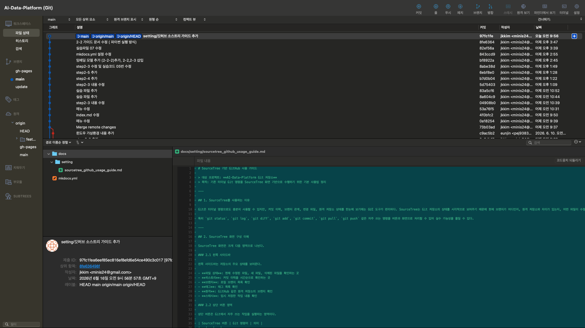
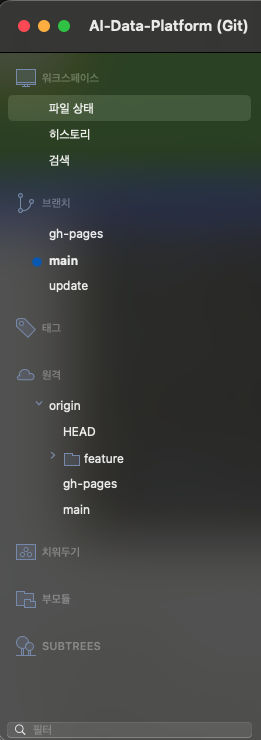
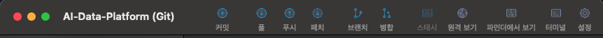
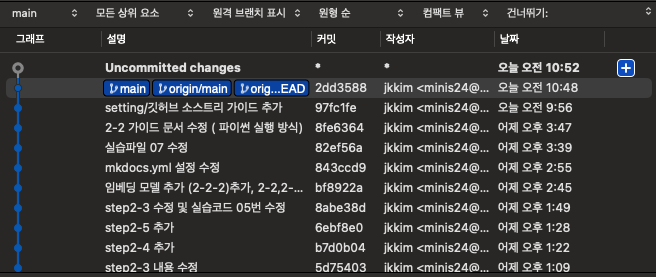

SourceTree 기반 GitHub 사용 가이드
대상 프로젝트: AI-Data-Platform Git 저장소
목적: 기존 터미널 Git 명령을 SourceTree 화면 기반으로 수행하기 위한 기본 사용법 정리
1. SourceTree를 사용하는 이유
Git은 터미널 명령으로도 충분히 사용할 수 있지만, 커밋 이력, 브랜치 관계, 변경 파일, 원격 저장소 상태를 한눈에 보기에는 GUI 도구가 편리하다. SourceTree는 Git 저장소의 상태를 시각적으로 보여주기 때문에 현재 브랜치가 어디인지, 원격 저장소와 차이가 있는지, 어떤 파일이 수정되었는지 쉽게 확인할 수 있다.
특히 git status, git log, git diff, git add, git commit, git pull, git push 같은 자주 쓰는 명령을 버튼과 화면으로 처리할 수 있어 실수 가능성을 줄일 수 있다.
2. SourceTree 화면 구성 이해
SourceTree 화면은 크게 다음 영역으로 나뉜다.

2.1 왼쪽 사이드바
왼쪽 사이드바는 저장소의 주요 상태를 보여준다.

- 파일 상태: 현재 수정된 파일, 새 파일, 삭제된 파일을 확인하는 곳
- 히스토리: 커밋 이력을 시간순으로 확인하는 곳
- 브랜치: 로컬 브랜치 목록 확인
- 태그: 태그 목록 확인
- 원격: GitHub 같은 원격 저장소의 브랜치 확인
- 스태시: 임시 저장한 작업 내용 확인
2.2 상단 버튼 영역
상단 버튼은 Git에서 자주 쓰는 작업을 실행하는 영역이다.

| SourceTree 버튼 | Git 명령어 | 의미 |
|---|---|---|
| 커밋 | git commit |
변경 내용을 로컬 저장소에 기록 |
| 풀 | git pull |
원격 저장소 변경 내용을 가져와 현재 브랜치에 반영 |
| 푸시 | git push |
내 로컬 커밋을 원격 저장소에 업로드 |
| 패치 | git fetch |
원격 저장소 정보를 가져오되 병합은 하지 않음 |
| 브랜치 | git branch |
새 브랜치 생성 또는 브랜치 관리 |
| 병합 | git merge |
다른 브랜치 변경 내용을 현재 브랜치에 병합 |
| 스태시 | git stash |
현재 작업 내용을 임시 저장 |
| 터미널 | 터미널 열기 | 현재 저장소 위치에서 터미널 실행 |
2.3 중앙 그래프 영역
중앙의 그래프는 커밋 이력과 브랜치 흐름을 보여준다.

- 파란 점: 커밋 하나
- 선: 커밋 간 연결 관계
main: 현재 로컬 브랜치 위치origin/main: 원격 GitHub의 main 브랜치 위치HEAD: 현재 내가 보고 있는 커밋 위치
화면에서 main, origin/main, origin/HEAD가 같은 커밋에 있으면 로컬과 원격이 동기화된 상태다.
3. 기본 작업 흐름
SourceTree를 사용할 때 가장 기본적인 작업 흐름은 아래 순서다.
1. 풀 또는 패치로 원격 변경 확인
2. 파일 수정
3. 파일 상태에서 변경 내용 확인
4. 스테이지에 올리기
5. 커밋 메시지 작성 후 커밋
6. 푸시로 GitHub에 업로드
터미널 명령으로 표현하면 다음과 같다.
git pull origin main
# 파일 수정
git status
git add .
git commit -m "작업 내용 설명"
git push origin main
SourceTree에서는 이 과정을 화면에서 버튼으로 수행한다고 보면 된다.
4. 저장소 열기
이미 로컬에 GitHub 저장소를 받아놓은 상태라면 SourceTree에서 다음 순서로 연다.
File > Open...
또는 시작 화면에서 Add Existing Local Repository를 선택한 뒤 프로젝트 폴더를 지정한다.
예시:
/Volumes/data/projects/AI-Data-Platform
저장소를 열면 SourceTree가 .git 정보를 읽어서 브랜치, 커밋 이력, 원격 저장소 정보를 자동으로 보여준다.
5. 현재 상태 확인하기
작업을 시작하기 전에 먼저 현재 상태를 확인한다.
5.1 파일 상태 확인
왼쪽 메뉴에서 파일 상태를 클릭한다.
여기에서 확인할 수 있는 내용은 다음과 같다.
- 수정된 파일
- 새로 추가된 파일
- 삭제된 파일
- 아직 커밋하지 않은 변경사항
터미널 명령으로는 다음과 같다.
git status
5.2 커밋 이력 확인
왼쪽 메뉴에서 히스토리를 클릭한다.
여기에서는 누가, 언제, 어떤 메시지로 커밋했는지 확인할 수 있다.
터미널 명령으로는 다음과 같다.
git log --oneline --graph --decorate
6. Pull 사용법
Pull은 GitHub 원격 저장소의 변경사항을 내 로컬 브랜치에 반영하는 작업이다.
SourceTree에서는 상단의 풀 버튼을 클릭한다.
일반적으로 다음 옵션을 확인한다.
- 원격 저장소:
origin - 원격 브랜치:
main - 로컬 브랜치:
main
터미널 명령으로는 다음과 같다.
git pull origin main
작업 전에는 항상 Pull을 먼저 하는 습관을 가지는 것이 좋다. 다른 사람이 먼저 올린 변경사항이 있는 상태에서 내 작업을 푸시하면 충돌이 발생할 수 있기 때문이다.
7. Fetch 사용법
Fetch는 원격 저장소의 최신 상태만 가져오고, 내 작업 브랜치에는 바로 반영하지 않는 작업이다.
SourceTree에서는 상단의 패치 버튼을 클릭한다.
터미널 명령으로는 다음과 같다.
git fetch origin
Fetch 후에는 origin/main 위치가 이동했는지 확인할 수 있다. 내 main보다 origin/main이 앞서 있으면 GitHub에 새로운 커밋이 있다는 뜻이다.
8. 파일 수정 후 변경 내용 확인
문서나 코드를 수정하면 SourceTree의 파일 상태에 변경된 파일이 나타난다.
파일을 클릭하면 아래 또는 오른쪽 영역에서 어떤 내용이 변경되었는지 확인할 수 있다.
- 초록색: 추가된 내용
- 빨간색: 삭제된 내용
이 화면은 터미널의 git diff와 같은 역할을 한다.
git diff
커밋하기 전에는 반드시 변경 내용을 확인하는 것이 좋다. 실수로 불필요한 파일이나 테스트 코드가 포함되는 것을 막을 수 있다.
9. 스테이지에 올리기
Git은 변경된 파일을 바로 커밋하지 않는다. 먼저 커밋할 대상을 선택해야 한다. 이 단계를 스테이징이라고 한다.
SourceTree의 파일 상태 화면에는 보통 다음 영역이 있다.
- 스테이지에 올라가지 않은 파일
- 스테이지에 올라간 파일
커밋할 파일만 선택해서 스테이지에 올리기를 누른다.
터미널 명령으로는 다음과 같다.
git add 파일명
전체 파일을 올리는 명령은 다음과 같다.
git add .
단, 전체 파일을 올릴 때는 불필요한 파일이 포함되지 않았는지 꼭 확인해야 한다.
10. 커밋하기
스테이지에 파일을 올린 후 상단의 커밋 버튼을 사용한다.
커밋 메시지는 나중에 이력을 볼 사람이 이해할 수 있게 작성한다.
좋은 커밋 메시지 예시는 다음과 같다.
step2-2 가이드 문서 수정
RAG 실습 코드 설명 보완
mkdocs nav 설정 수정
터미널 명령으로는 다음과 같다.
git commit -m "step2-2 가이드 문서 수정"
커밋은 내 로컬 저장소에만 기록된다. GitHub에 반영하려면 반드시 Push가 필요하다.
11. Push 사용법
Push는 내 로컬 커밋을 GitHub 원격 저장소에 업로드하는 작업이다.
SourceTree에서는 상단의 푸시 버튼을 클릭한다.
일반적으로 다음을 확인한다.
- 로컬 브랜치:
main - 원격 브랜치:
origin/main
터미널 명령으로는 다음과 같다.
git push origin main
Push가 완료되면 GitHub 웹사이트에서 커밋이 반영되었는지 확인할 수 있다.
12. 브랜치 사용법
브랜치는 작업을 분리하기 위한 기능이다. 안정적인 main 브랜치를 유지하면서 새로운 문서 작성이나 기능 개발을 별도 브랜치에서 진행할 수 있다.
12.1 브랜치 생성
SourceTree 상단의 브랜치 버튼을 클릭한다.
브랜치 이름 예시는 다음과 같다.
feature/step2-rag-guide
update/mkdocs-nav
터미널 명령으로는 다음과 같다.
git checkout -b feature/step2-rag-guide
12.2 브랜치 전환
왼쪽 사이드바의 브랜치 목록에서 이동할 브랜치를 더블클릭한다.
터미널 명령으로는 다음과 같다.
git checkout main
또는 최신 Git에서는 다음 명령도 사용한다.
git switch main
13. Merge 사용법
Merge는 다른 브랜치의 변경사항을 현재 브랜치에 합치는 작업이다.
예를 들어 feature/step2-rag-guide 브랜치에서 작업을 끝낸 뒤 main에 합치려면 다음 순서로 진행한다.
1. main 브랜치로 이동
2. Pull로 main 최신화
3. 병합 버튼 클릭
4. 합칠 브랜치 선택
5. 충돌 여부 확인
6. Push
터미널 명령으로는 다음과 같다.
git switch main
git pull origin main
git merge feature/step2-rag-guide
git push origin main
14. 충돌 해결 기본 절차
충돌은 같은 파일의 같은 부분을 여러 사람이 다르게 수정했을 때 발생한다.
SourceTree에서 충돌이 발생하면 파일 상태 화면에 충돌 파일이 표시된다.
기본 해결 절차는 다음과 같다.
1. 충돌 파일 열기
2. 충돌 표시 부분 확인
3. 남길 내용을 직접 정리
4. 저장
5. 해결된 파일을 스테이지에 올리기
6. 커밋
7. 푸시
충돌 파일에는 보통 다음과 같은 표시가 들어간다.
<<<<<<< HEAD
내 로컬 변경 내용
=======
원격 또는 병합 대상 변경 내용
>>>>>>> branch-name
이 표시는 그대로 남겨두면 안 된다. 최종 문서나 코드에 필요한 내용만 남기고 충돌 표시 문자는 삭제해야 한다.
15. Stash 사용법
Stash는 아직 커밋하지 않은 작업 내용을 임시로 저장하는 기능이다.
예를 들어 현재 문서를 수정 중인데 급하게 Pull을 해야 할 때 사용할 수 있다.
SourceTree에서는 상단의 스태시 버튼을 클릭한다.
터미널 명령으로는 다음과 같다.
git stash
다시 꺼낼 때는 다음 명령과 같다.
git stash pop
SourceTree에서는 왼쪽 사이드바의 스태시 영역에서 저장된 작업을 확인하고 다시 적용할 수 있다.
16. 자주 쓰는 작업 시나리오
16.1 문서 수정 후 GitHub에 올리기
1. SourceTree에서 저장소 열기
2. 풀 클릭
3. 문서 수정
4. 파일 상태 클릭
5. 변경 내용 확인
6. 수정 파일 스테이지에 올리기
7. 커밋 메시지 작성
8. 커밋 클릭
9. 푸시 클릭
10. GitHub에서 반영 확인
16.2 원격 저장소에 새 커밋이 있는지 확인하기
1. 패치 클릭
2. 히스토리 확인
3. origin/main이 내 main보다 앞서 있는지 확인
4. 필요하면 풀 실행
16.3 커밋은 했는데 Push를 안 한 경우
히스토리에서 main이 origin/main보다 앞에 있으면 내 로컬에만 커밋이 있고 GitHub에는 아직 올라가지 않은 상태다.
이때는 푸시를 누르면 된다.
16.4 GitHub에는 변경이 있는데 내 로컬에 없는 경우
히스토리에서 origin/main이 main보다 앞에 있으면 GitHub에 새로운 커밋이 있고 내 로컬에는 아직 반영되지 않은 상태다.
이때는 풀을 누르면 된다.
17. SourceTree 사용 시 주의사항
17.1 작업 전 Pull 먼저 하기
여러 PC 또는 여러 사람이 같은 저장소를 사용한다면 작업 전 항상 Pull을 먼저 하는 것이 좋다.
17.2 커밋 전 변경 내용 확인하기
파일 상태에서 변경 내용을 확인하지 않고 커밋하면 불필요한 파일이 포함될 수 있다.
예를 들어 다음 파일은 보통 커밋하지 않는다.
.DS_Store
.env
.venv/
node_modules/
__pycache__/
이런 파일은 .gitignore에 등록하는 것이 좋다.
17.3 커밋 메시지는 구체적으로 쓰기
나쁜 예시는 다음과 같다.
수정
작업
좋은 예시는 다음과 같다.
step2-3 RAG 검색 실습 설명 보완
mkdocs nav에 step2 문서 추가
17.4 Pull과 Push 차이 기억하기
Pull = GitHub → 내 PC
Push = 내 PC → GitHub
18. 터미널 명령과 SourceTree 기능 매핑표
| 목적 | 터미널 명령 | SourceTree 기능 |
|---|---|---|
| 현재 상태 확인 | git status |
파일 상태 |
| 변경 내용 확인 | git diff |
파일 클릭 후 diff 확인 |
| 파일 스테이지 | git add 파일명 |
스테이지에 올리기 |
| 커밋 | git commit -m "메시지" |
커밋 버튼 |
| 원격 정보 가져오기 | git fetch origin |
패치 버튼 |
| 원격 변경 반영 | git pull origin main |
풀 버튼 |
| 원격으로 업로드 | git push origin main |
푸시 버튼 |
| 브랜치 생성 | git checkout -b 브랜치명 |
브랜치 버튼 |
| 브랜치 이동 | git switch 브랜치명 |
브랜치 더블클릭 |
| 병합 | git merge 브랜치명 |
병합 버튼 |
| 임시 저장 | git stash |
스태시 버튼 |
19. AI-Data-Platform 프로젝트 기준 추천 사용 방식
현재 프로젝트는 MkDocs 문서와 실습 코드가 함께 관리되는 구조다. 따라서 SourceTree에서는 아래 방식으로 사용하는 것을 추천한다.
19.1 문서 수정 작업
문서 수정은 보통 docs/ 아래의 .md 파일을 수정한다.
예시:
docs/study/step2/step2_2_vector_db_build_and_document_ingestion_guide.md
수정 후에는 SourceTree 파일 상태에서 해당 파일만 스테이지에 올리고 커밋한다.
19.2 실습 코드 수정 작업
실습 코드는 보통 labs/ 아래에 위치한다.
예시:
labs/rag/01_create_sample_doc.py
labs/rag/02_load_and_chunk.py
labs/rag/03_insert_to_chroma.py
labs/rag/04_search_chroma.py
코드 수정 시에는 실행 결과 파일이나 임시 파일이 같이 커밋되지 않도록 확인해야 한다.
19.3 MkDocs 설정 수정
문서 메뉴를 추가하거나 순서를 바꿀 때는 mkdocs.yml을 수정한다.
이 파일은 사이트 전체 메뉴와 구조에 영향을 주기 때문에 커밋 전에 변경 내용을 꼭 확인하는 것이 좋다.
20. 추천 작업 루틴
매번 작업할 때 아래 루틴을 따르면 안정적으로 GitHub를 사용할 수 있다.
1. SourceTree 실행
2. 저장소 선택
3. 패치 또는 풀 실행
4. VSCode 또는 IntelliJ에서 파일 수정
5. SourceTree 파일 상태 확인
6. 변경 내용 검토
7. 필요한 파일만 스테이지에 올리기
8. 커밋 메시지 작성
9. 커밋
10. 푸시
11. GitHub Pages 또는 GitHub 저장소에서 결과 확인
21. 문제 발생 시 기본 확인 순서
문제가 생기면 먼저 아래 순서로 확인한다.
1. 현재 브랜치가 main인지 확인
2. 파일 상태에 커밋하지 않은 파일이 있는지 확인
3. Pull이 필요한 상태인지 확인
4. Push가 필요한 상태인지 확인
5. 충돌 파일이 있는지 확인
6. 필요하면 SourceTree의 터미널 버튼을 눌러 직접 git status 실행
터미널에서 확인하는 가장 기본 명령은 다음과 같다.
git status
이 명령은 현재 Git 상태를 가장 정확하게 알려준다. SourceTree 화면이 헷갈릴 때는 터미널에서 git status를 함께 확인하면 좋다.
22. 핵심 요약
SourceTree는 Git 명령을 버튼과 그래프로 보여주는 도구다. 처음에는 모든 기능을 다 외우려고 하기보다 아래 5개 기능만 익히면 충분하다.
1. 파일 상태 확인
2. Pull
3. Stage
4. Commit
5. Push
이 흐름만 익숙해져도 문서 수정, 실습 코드 관리, GitHub Pages 배포 전 소스 관리까지 대부분의 작업을 안정적으로 처리할 수 있다.